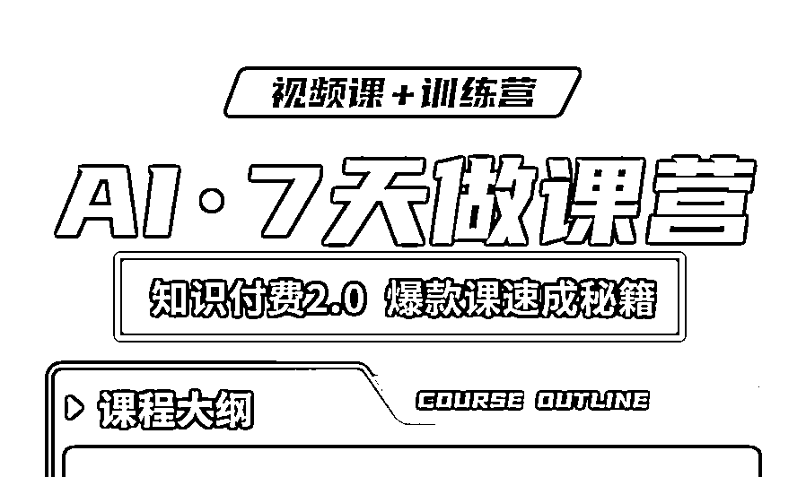
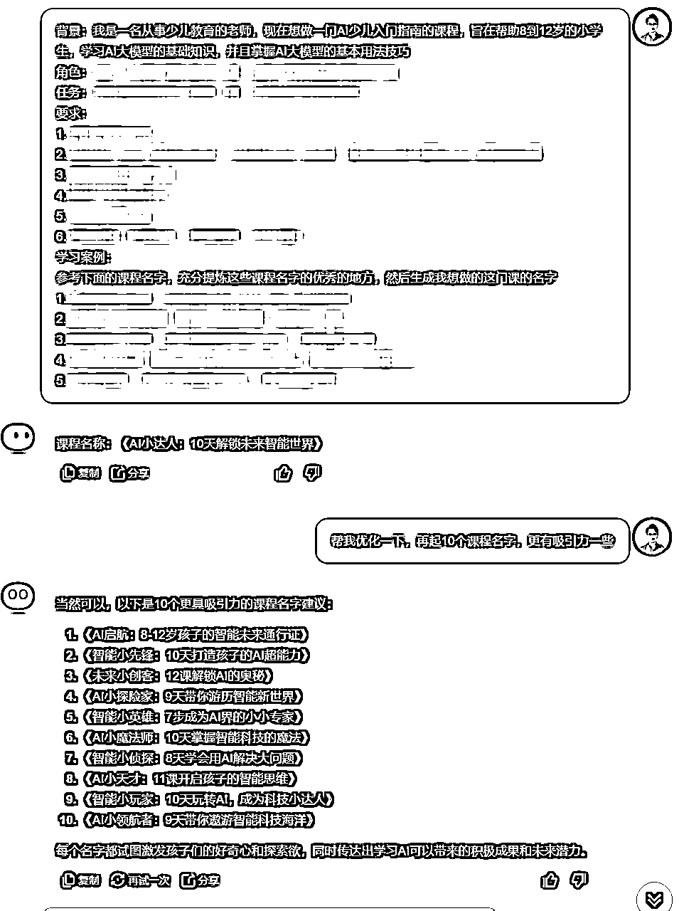

来源：https://d037mrmszsw.feishu.cn/docx/ZLZ5d77CIo3yTKxtXLwc9v1hnXB
👀上次给大家分享了「课程制作」所需的「AI工具」⬇️
https://t.zsxq.com/MycFR
接下来我们要解决「课程定位」问题，本文将以「独特角度」给大家带来「与众不同」的课程「精确定位法」，以及如何「借助AI」来选取「自带流量」的课程名字。
那么，什么是课程定位？
💥一句话，就是你能通过出售xx产品/服务，满足xx人的xx需求。
🌹比如，半目的课程定位就是：帮助自媒体创业者、想做副业的小伙伴，通过AI工具+提示词来高效解决知识付费产品的制作和上架问题。
大家可不要小看这句话，这句话就是你将来能填到：朋友圈签名栏、公众号简介、小红书介绍等，自媒体最显眼位置的一句话，相当于陌生人见你第一面，问你是干什么的，你一句话都说不清自己到底是干什么的，那别人就会感觉你：不！专！业！
解决了这句话，再取个自带流量的好课名，那么就可以开始正式做课了。
对自己来说，到底做什么样的课程，才能兼顾：爱好+擅长+赚钱，能否平衡？
🚬 我觉得大家很有必要，今晚，半夜，自己一个人在书房，或者窝在沙发，电脑前，或者捧着手机，抽支烟，或者抿两口小酒，好好的，好好的，静下来，静下心来，仔仔细细，按我标好的①②③④⑤，按顺序，层层递进，循序渐进，想5个问题：
① 我喜欢什么？
② 我擅长什么？
③ 我想学什么？
④ 对标博主，验证这条赛道是不是有人已跑通，且跑的怎么样？
⑤ 和而不同+差异化
⬆️前4点很好理解，我们的主课中有详细讲解和例举，接下来我在这里重点给大家讲讲第⑤点【和而不同➕差异化】
举个例子，我当初市场调研【课程制作】这个设想的时候，去抖音去小红书去视频号去知识星球，发现确实有不少人在做，有些还做的规模蛮大，如果我不管不顾一头扎进去，和正常人一样去挤【做课】这个赛道，那猴年马月才能与各位相见。巧妙之处就在于，我刁钻的切了个【AI+做课】的小角度入行，那就不一样了，我还是我，但是不一样的烟火，我还是个做课的，但我是个搞 AI 做课的，这就叫不同，这就叫做差异化。所以大家一定要瞅个刁钻的角度去切市场，这个很重要，聪明的人一定会去这么做。
那什么是【和】而不同呢？不同，很好理解，其实就是差异化，刚才讲过了，那么为什么还要【和】呢？
还拿半目我来当案例，如果看过我的课程海报（就不贴出来了，避免引流嫌疑），大家有没有觉得，乍眼看去，我的自拍照，还有我的海报色系、风格，大体上还是一个老师的感觉，一看我的所有物料都是个臭做知识付费的，是个臭卖课的，这一点也很重要，让自己的形象、海报、朋友圈等，看起来一定要像做这一行的，这个很重要诶，如果我打扮的花里胡哨，朋友圈嘻嘻哈哈，或者字里行间话里话外满嘴跑火车，大家觉得自己海会前来买我的课吗？让自己像做这一行的，一眼看上去就是做什么什么的，这个太重要了，在【和】同行的基础之上，再叠加差异化的 buff，这才是真正有源之水的差异化，后期才有无限可能。
🌙 好了，现在请回到你的书房，回到你的沙发，掐掉你手里的烟蒂，轻轻放下你手中的酒杯🍷，在充分考量以上 ①②③④⑤ 这5个问题后，请告诉半目老师，你的最终结论⬇️
一句话课程定位：就是你能通过出售xx产品/服务，满足xx人的xx需求。
想清楚自己做什么课，并且确定自己的课有市场（同行已经卖的不错），那么接下来我们就将进入正式做课环节。首先是取一个【自带流量】的好课名，那么，课程名字怎么取才能流量？有什么诀窍？AI 能帮我取名字吗？
① 课程名称字数限制
② 课名中最好包含你这个行业的关键词
③ 多包含数字
④ 多体现结果、成果、效果
⬆️后3点很好理解，我们的主课中有详细讲解和例举，接下来我在这里重点给大家讲讲第①点【课程名称字数限制】
☞ 课名分2种：
● 一种比较短（5-7个字）：比如《AI·7天做课营》，这种短的课名，一般用在海报、宣传图、文章题目等，短小精悍，方便放置和推广，长了也写不下呀🤭
● 另一种比较长（12-21个字）：也叫【课名的副标题】，比如我的这套课程副标题就是《知识付费2.0爆款课速成秘籍》，这种长的标题的目的是：进一步阐述主题的含义，通常出现 “秘籍、手册” 等字眼，用来吸引客户，一般写在主标题的下方，比如⬇️

● 当然，这种长的标题也🉑直接作为主标题使用，这种也很常见。
● 但，半目老师的建议是，小孩子才做选择，作为成熟稳重经验丰富的老师来讲，【长短课名我们都要】！
● 海报、宣传图、文章题目需要贴上课程名字时，我们就用短课名；上传课程平台、或者其他字数多少无所谓都能放得下的地方，就可以用长标题，长标题的优势在于字数多，那么包含的关键词就多，对引流还是有优势的。
刚才我们详细分析了一个好的课程名字该怎么取，萃取出了4大原则，你的课程名字不一定都必须同时遵循这4个原则，尽量往上边靠就可以。
当然，如果你手握【取课名4大原则】，仍举棋不定，达到了【懂是懂了就是不知道具体怎么做】的懵懂状态，那么，躺平吧，让 AI 来拯救你，注入你灵感！
⭐️【精心打磨到位的「取课名」AI 提示词】这项内容是半目老师的学员专属，尊重大家的付费权益，所以暂不对外，希望同学们给予理解❤️
🎯还是以《AI少儿入门指南》这门课程为例，我们来看看「取课名」AI 提示词 生成的效果：

💡AI 生成的结果中，给你灵感的一些关键词，可以做「排列组合」，再结合本文给大家提炼的「取课名4大原则」，尤其要重视「包含行业关键词」这一条，这样你就可以得到自己「满意」且「自带流量」的课程名字✔️
🎯课程定位精准了，课名自带流量，下次分享半目将会给大家带来「非常尤其特别重要」的一节课：【那种一看就想买的课程目录，用AI怎么写？】
🔚阅完本文，如有所收获，就请给半目多多点点赞👍，期盼各位的鼓励，更期盼大家就「AI+课程制作」这个我最擅长的领域进行提问，任何问题都可以，我定会毫无保留的分享和解答！